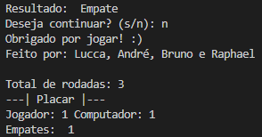
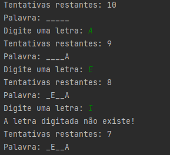
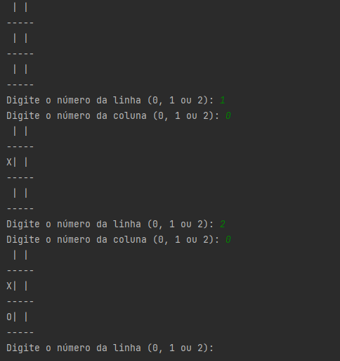
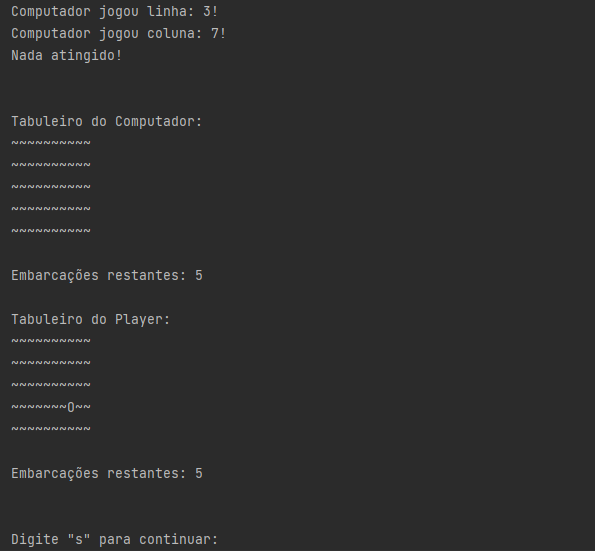

Raciocínio Algorítmico
Sobre a disciplina
A disciplina de Raciocínio Algorítmico trata do desenvolvimento do pensamento computacional
por meio da construção de algoritmos. Durante o semestre os estudantes aprendem a manipular
variáveis, expressões lógico-aritmético-relacionais, estruturas de controle, estruturas de dados
homogêneas e funções para a resolução de problemas computacionais na forma de algoritmos.
Ao final da disciplina, o estudante é capaz de implementar programas computacionais para
problemas de baixa complexidade, utilizando linguagem de programação, com autorregulação e
atitude cooperativa. Orientador(a): Marina de Lara
Projetos
-
JOQUEMPÔ
Jogo de joquempô feito em grupo.

-
JOGO DA FORCA
Desafio individual para desenvolver um jogo da forca.

-
JOGO DA VELHA
Jogo da velha desenvolvido em grupo.

-
BATALHA NAVAL
Jogo inspirado em batalha naval. Desafio incluso.
